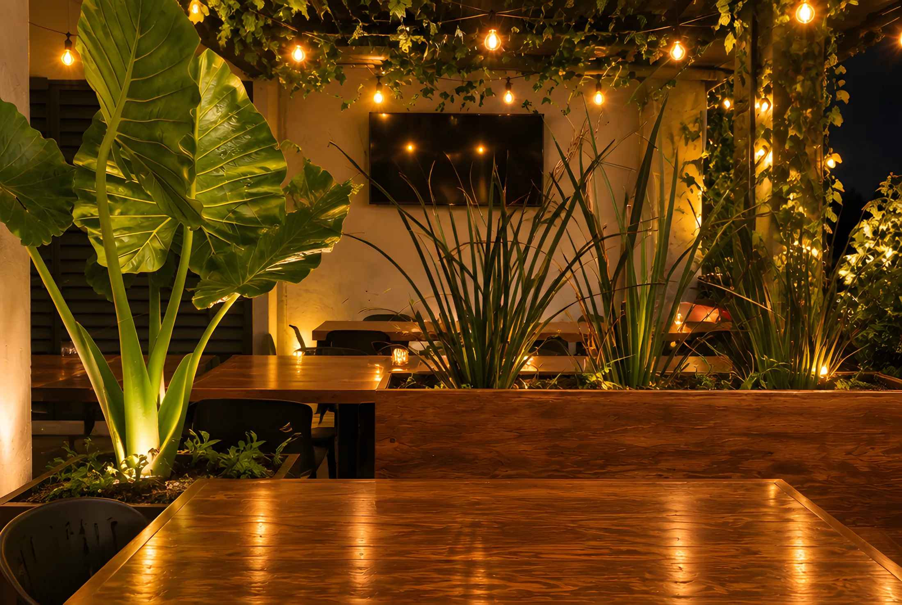
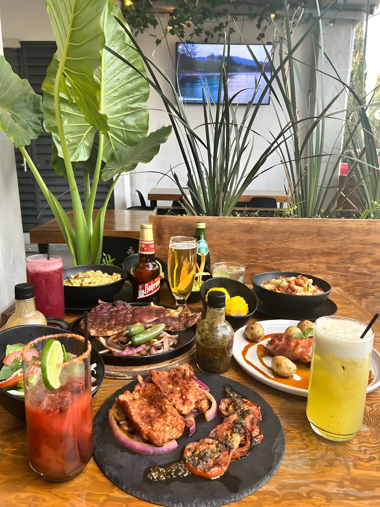

Imagen ilustrativa
Parrilla & Bistro · Aguascalientes
Cortes al carbón, terraza de noche.
Parrilla argentina y cocina italiana en Jardines de la Asunción.


Reserva directa
Aparta tu mesa.
Cuatro datos y te confirmamos por WhatsApp.


Imagen ilustrativa
La terraza
Noches de terraza.
Enredadera, focos cálidos y calentador de torre para las noches frías.
Así llega a tu mesa



Eventos y grupos
Tu festejo, en la terraza.
Cumpleaños, comidas de empresa y grupos grandes. Cuéntanos y te armamos la mesa.
Cinco estrellas.
“Aquí sí que se come delicioso. ¡Me encantó todo! Y la presentación 10/10.”
Mariana Ruiz de Vivar Google
“Un lugar muy tranquilo, dónde el servicio acoge de manera increíble… Vale la pena.”
Iván González Google
“Es mi restaurante favorito al sur de la ciudad, tiene platillos variados y muy deliciosos.”
Montserrat Hernández Bernal Google
Visítanos
Prol. Josefa Ortiz de Domínguez 503Jardines de la Asunción, 20270
Aguascalientes, Ags.